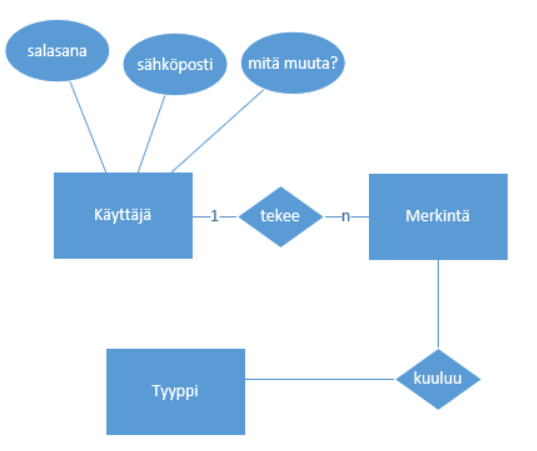
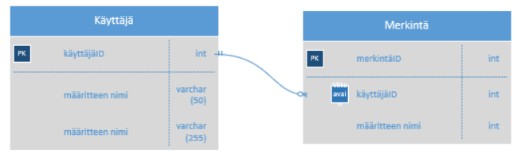
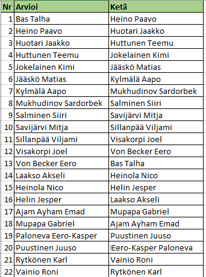

Harjoitustyö 2
Tehtävänanto
Vertaisarviointi-dokumentti
1. Suunnittelu
- laaditaan tietokannasta suunnitelma, mieti mitä tämä järjestelmä vaatisi toimiakseen
- tehdään kaksi kuvaa käyttöliittymästä (mobiili: merkinnän tekeminen, desktop: hallintanäkymä)
(Vertaisarviointi, arvioi kaverin työ, joku toinen arvioi sinun työtäsi - mieti palaute kohteliaaksi ja sellaiseksi että siitä olisi hyötyä!)
2. Toteutus
- mvc-mallin hyödyntäminen
- mahdollisesti mukaan vielä Router-ominaisuus (tästä lisää myöhemmin)
Tietokantasuunnitelma
1. ER-kaavio
- Visio Tietokannan Chen-merkintätapa
- mieti ensin mitä tauluja (= käsitteitä) tarvitaan
- nimeä järkevästi
- lisää väliin yhteydet (muista timantti ja lukumääräsuhde)
- lopuksi koristele palloin (= attribuutein eli kentin)

2. Tietokantakaavio
- UML Kukonaskel-merkintätapa

Parit vertaisarvioinnille
